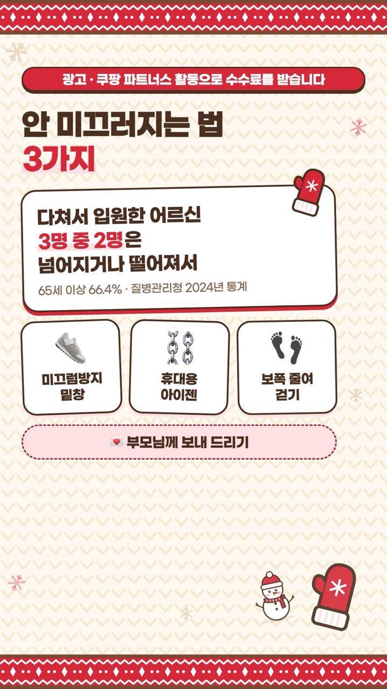

23번 영상
어르신 입원 3명 중 2명 넘어져서 다쳤어요 부모님 신발부터 봐요
광고 이 게시물은 쿠팡 파트너스 활동의 일환으로, 이에 따른 일정액의 수수료를 제공받습니다.
영상에서 비교한 3가지예요. 누르면 쿠팡 검색 결과로 가요.
영상 속 비교표 바로 보기 ↓안 미끄러지는 법 3가지
다쳐서 입원한 어르신 3명 중 2명은 넘어지거나 떨어져서
65세 이상 66.4% · 질병관리청 2024년 통계
신발 + 걸음법 같이 챙겨요
- 미끄럼방지 밑창
- ✔ 굽 낮은 신발로
- ⚠ 굽 높은 신발은 피해요
- 정부 행동요령 권고
- 휴대용 아이젠
- ✔ 눈길·빙판에서만
- ⚠ 신발 크기 보고 사요
- 신발에 끼우는 미끄럼 체인
- 걸음법
- ✔ 보폭 줄이고 손은 밖으로
- ⚠ 낙상 45.3%는 집 안에서
- 누구나 오늘부터
출처: 질병관리청(2026.6·2026.8) · 대설·한파 국민행동요령(경기도) · 서울시(2021)

다 읽으셨나요?
영상에서 비교한 3가지, 여기서 바로 쿠팡에서 볼 수 있어요.